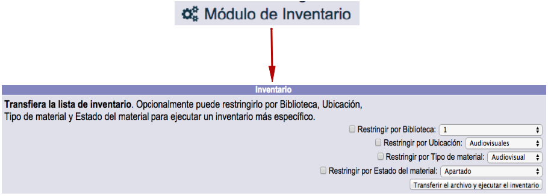
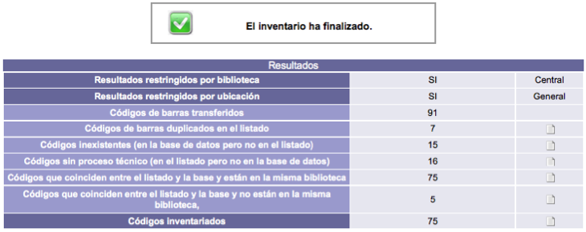
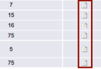
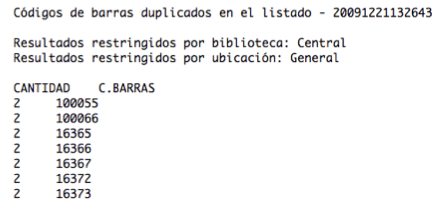
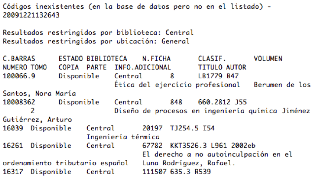
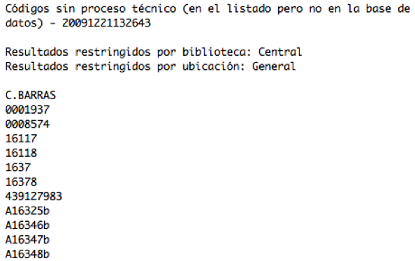
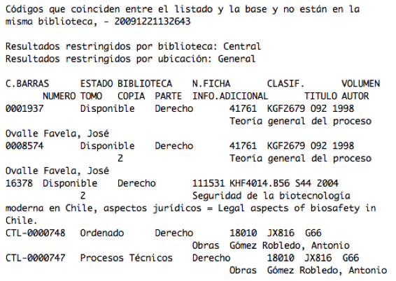
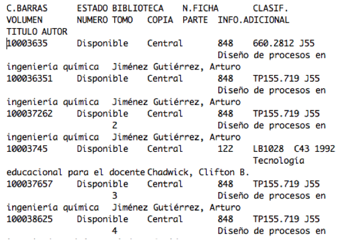

Además de en el módulo de Circulación, aquí también se encuentra una función con una destacada importancia para cualquier tipo de institución: la ejecución de inventarios. De manera precisa, esta acción se define como el proceso de comparación entre los materiales existentes en las colecciones contra la información registrada en un sistema de control (base de datos, lista impresa, sistema de automatización, etc.).
Por lo tanto, el objetivo principal de un inventario es verificar la presencia real de todos los materiales recogidos en las colecciones y en el sistema de control de una institución, sea cual sea este.
Funcionamiento general
Explicado de forma sencilla, el comportamiento de esta función puede resumirse en tres puntos:
-
El operador envía una lista de códigos de barras al sistema, indicando las restricciones (biblioteca, ubicación, tipo de material o estado del material) a aplicar durante la comparación contra los datos de ejemplares registrados en el propio sistema.
-
El sistema despliega los resultados del proceso en pantalla.
-
El operador revisa los resultados y descarga las listas creadas.
Un par de comentarios adicionales:
-
Se indica la biblioteca propietaria de los materiales inventariados para que el sistema no considere los materiales de otras bibliotecas (por ejemplo, en el caso de una red de ellas). De esta manera se evita obtener resultados equivocados en las listas generadas.
-
Se indica la ubicación de los materiales inventariados para que el sistema no considere los materiales de otras ubicaciones de la biblioteca. De esta manera se evita, al igual que en el caso anterior, obtener resultados erróneos en las listas generadas.
Procedimiento de ejecución
Lista de códigos de barras
En primer lugar, es necesario crear un fichero que contenga los números de códigos de barras de los materiales. Para generar esta lista se recomienda el uso de lectores de códigos de barras, ya que estos dispositivos agilizan el procedimiento y disminuyen la existencia de errores en la captura de los datos.
Por otro lado, la lista de códigos de barras debe tener las siguientes características:
-
Ser un fichero de texto plano (extensión .txt).
-
Tener un número de código de barras por línea.
-
Sin espacios u otros caracteres antes del código de barras.
-
Sin espacios u otros caracteres después del código de barras.
Transferencia del archivo
El acceso a la función de inventario se realiza a través de la opción correspondiente del módulo.

En esta pantalla se deben marcar aquellas restricciones que se deseen aplicar al inventario: biblioteca, ubicación, tipo de material y estado del material, para después hacer clic en el botón Transferir el archivo y ejecutar el inventario.

Obtención de resultados
Después de transferir el archivo con la lista de códigos de barras al sistema, el proceso de inventario se lleva a cabo automáticamente. Esta acción puede tardar algunos minutos dependiendo de la cantidad de ejemplares existentes en el archivo y de la cantidad de ejemplares considerados para la comparación.
Al finalizar el proceso mencionado, el sistema muestra los resultados obtenidos en detalle.

Las cifras se distribuyen en las siguientes categorías:
-
Códigos de barras transferidos: cantidad de códigos existentes en el archivo transferido.
-
Códigos de barras duplicados en el listado: cantidad de códigos existentes en dos o más ocasiones dentro del archivo transferido.
-
Códigos inexistentes (en la base de datos pero no en el listado): cantidad de códigos que están en el sistema pero no en el archivo transferido.
-
Códigos sin proceso técnico (en el listado pero no en la base de datos): cantidad de códigos que están en el archivo transferido pero que no fueron encontrados en el sistema.
-
Códigos que coinciden entre el listado y la base y están en la misma biblioteca: cantidad de códigos existentes en el archivo transferido, en el sistema y en la biblioteca elegida como restricción.
-
Códigos que coinciden entre el listado y la base y no están en la misma biblioteca: cantidad de códigos existentes en el archivo transferido y en el sistema pero pertenecientes a otra biblioteca diferente a la seleccionada en la restricción.
-
Códigos inventariados: cantidad total de códigos de barras tratados.
Listados descargables
Para todos aquellos resultados de un inventario que son numéricos, se generan listados asociados que pueden ser descargados. Estas listas se crean cuando el número de códigos de barras resultante es mayor que cero.
La opción que permite la descarga de los listados aparece representada por un icono situado en la parte derecha de la pantalla.

Listado de códigos duplicados
Este tipo de lista muestra los números de códigos de barras que fueron localizados en dos o más ocasiones.

Listado de códigos inexistentes
Este tipo de lista muestra los datos de los ejemplares cuyos códigos de barras no existen en el archivo transferido y, por lo tanto, se consideran no inventariados.
En este listado pueden aparecer indicados: código de barras, estado del material, biblioteca propietaria, número de ficha / registro, clasificación, volumen, número, tomo, ejemplar, parte, información adicional, título y autor, para su posible búsqueda y recuperación. Además, los resultados se encuentran ordenados por estado del material / código de barras.

Listado de códigos sin proceso técnico
Este tipo de lista muestra los códigos de barras de los ejemplares cuyos números existen en el archivo transferido pero no están registrados en el sistema.

Listado de códigos de otras bibliotecas
Este tipo de lista muestra los datos de los ejemplares cuyos números están en el archivo transferido pero que pertenecen a otra biblioteca. Es decir, no coinciden con la restricción de biblioteca propietaria utilizada en la ejecución del inventario.
En este listado pueden aparecer indicados: código de barras, estado del material, biblioteca propietaria, número de ficha / registro, clasificación, volumen, número, tomo, ejemplar, parte, información adicional, título y autor.

Listado de códigos inventariados
Este tipo de lista muestra los datos de los ejemplares cuyos números están en el archivo transferido y fueron encontrados en el sistema, por lo que son materiales inventariados.
En este listado pueden aparecer indicados: código de barras, estado del material, biblioteca propietaria, número de ficha / registro, clasificación, volumen, número, tomo, ejemplar, parte, información adicional, título y autor.
